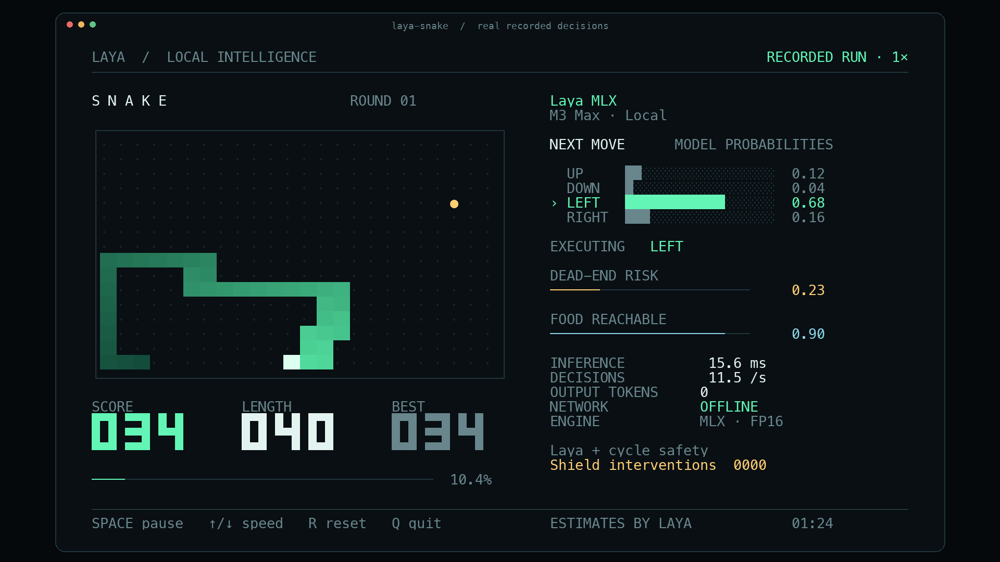

Laya Snake: local terminal demo
An actual Snake game driven by Laya MLX predictions on Apple silicon, with a terminal layout designed for a readable social clip. The left panel shows the board, score, length and best score. The right panel shows four direction probabilities, the executed move, two model estimates, measured inference time, decision rate and local/offline status.

Run
From this repository on an Apple silicon Mac:
uv run --extra demo laya-snake
The default model is aac6fef/laya-multilingual-mlx, using the original FP16 weights. The demo first checks models/hub/laya-multilingual-mlx and models/laya-multilingual, then the local Hugging Face cache. It never downloads a missing model during play. On a fresh checkout, download the weights once beforehand:
uv run --extra demo hf download aac6fef/laya-multilingual-mlx \
--local-dir models/hub/laya-multilingual-mlx
uv run --extra demo laya-snake
Use a terminal at least 104 columns × 35 rows with a monospace font and true color. Menlo works well on macOS. A smaller terminal pauses the game until resized. Default board size is 24 × 16, initial length is 6, and the presentation target is 12 decisions/second.
The live display respects NO_COLOR. If your shell sets it, use env -u NO_COLOR uv run --extra demo laya-snake for the colored presentation. The benchmark explicitly enables true color so this environment setting cannot silently change its rendering workload.
| Control | Action |
|---|---|
| Space | Pause / resume |
| ↑ / ↓, or + / − | Increase / decrease the paced target by 2 decisions/second |
| R | Start a new round with the next seed |
| Q or Ctrl-C | Quit and restore the terminal |
Useful modes:
# Every move waits for a new inference, with no pacing delay.
uv run --extra demo laya-snake --max-speed
# Optional measured compilation + prefix-reuse path.
uv run --extra demo laya-snake --optimize --max-speed
# Use the fixed computation-budget setting validated on the recorded M3 Max.
uv run --extra demo laya-snake --fps 20
# Execute the model's raw first choice without the execution safety shield.
uv run --extra demo laya-snake --unassisted
# A finite run without a terminal display.
uv run --extra demo laya-snake --headless --steps 600 --max-speed
--model accepts a local directory or an already cached Hub ID. --width, --height, --seed and --initial-length configure a run. Boards must be at least 4 × 4 with one even dimension, because the safety planner uses a Hamiltonian cycle. Speed keys affect paced mode; --max-speed always advances as soon as the current decision is complete.
Record and export
The recording contains actual board states, original model probabilities, executed actions, timings, model provenance and run summaries. Each board is paired with the prediction made before its next move.
uv run --extra demo laya-snake --fps 12 --duration 100 \
--record artifacts/snake/run.jsonl
# ffmpeg is required for video export; on macOS: brew install ffmpeg
uv run --extra demo laya-snake export artifacts/snake/run.jsonl \
--start 65 --seconds 30 --output artifacts/snake/demo.mp4 \
--gif artifacts/snake/demo.gif
uv run --extra demo laya-snake export artifacts/snake/run.jsonl \
--start 85 --output artifacts/snake/poster.png
MP4 export defaults to 1920 × 1080, 30 video frames/second, H.264, and original wall-clock speed. It renders the same terminal cells from the recorded data; it is a rendered replay, rather than a screen capture. A visible RECORDED RUN · 1× label and a JSON sidecar identify this. Exporting at 30 FPS does not turn a 12-decision/second game into a 30-decision/second game. At each video timestamp the exporter uses the most recent actual source frame. Fast recordings may have more decisions than the chosen video frame rate can display.
Use --headless when recording without an attached terminal. Model inference still happens for every move; live terminal drawing is omitted. Output files are not overwritten. Start a new recording when changing the presentation or speed rather than mixing pauses or resets into a short social excerpt.
The MP4 defaults to a 30-second excerpt and --gif exports its first 15 seconds at the same original pace. Use --gif-seconds to change the GIF duration. The shipped social assets include both formats plus a PNG poster.
What the AI does
This is a feature-assisted neural decision demo, using the existing Laya checkpoint without Snake training. A deterministic planner describes legal directions, safe cycle progress and current empty-cell connectivity. Laya receives those descriptions, including which safe direction makes the most progress. It returns a distribution over UP, DOWN, LEFT and RIGHT. The probability bars are those original model outputs.
The default safety shield executes the model's highest-probability admissible direction. If the raw first choice is inadmissible, the UI keeps that original distribution and marks the executed move with SHIELD; the intervention counter increases. The default run is labeled Laya + cycle safety. --unassisted disables that execution restriction; it still gives the model planner features. Neither mode establishes that the checkpoint can infer Snake strategy from an unprocessed board.
One Agent.predict call batches three real questions per move:
| Display | Actual meaning |
|---|---|
| NEXT MOVE | Laya choice probabilities over the four described directions |
| DEAD-END RISK | 1 − P(safe route available), from a Laya noul answer |
| FOOD REACHABLE | Laya noul answer about the supplied current empty-cell reachability summary |
| INFERENCE | Synchronized Agent.predict wall time, including tokenization and result conversion |
| DECISIONS | Recent measured completed-decision rate |
| NETWORK OFFLINE | Local checkpoint loading and local inference with Hub offline mode; this does not switch off the Mac's Wi-Fi |
The two estimates are model outputs, not calibrated Snake death probabilities. Current empty-cell reachability also differs from future reachability after the tail moves. Risk may remain low for a long time because the planner supplies a safe route. No random values or prerecorded predictions are substituted during live play.
The cycle shield preserves the cyclic order of the body and never advances past the tail or the food. Every admitted action makes positive progress toward the current food. For an initially valid board, this gives an available safe successor and a finite food-progress bound. Tests exercise arbitrary choices among admissible actions until a board is full.
Reproduce the speed test
uv run --extra demo laya-snake benchmark \
--rates 10,12,15,18,20,25,30,35,40,45,50,60 \
--sweep-steps 120 --soak-steps 600 --seeds 101,102,103,104 \
--output artifacts/snake/benchmark.json
Use --resume --output artifacts/snake/benchmark.json to retain completed episodes and resume the recorded configuration. Each report identifies the checkpoint, prompt, environment and source hash. A failed rate needs no further seeds; a passing rate must complete every requested seed.
The benchmark measures model inference, planning, Rich composition, ANSI serialization into memory, and game updates. It excludes model loading, warmup and the terminal emulator's own painting. Uncapped episodes measure actual sustained moves/second. Paced episodes separately check whether at least 99% of active ticks fit the requested computation budget, on every seed. OS sleep overshoot remains included in the reported achieved rate.
The final truecolor M3 Max run completed 8,160 decisions with zero deaths, including 2,400 uncapped steps at 63.61 steps/second overall. Its highest passing tested computation-budget setting was 20 FPS, with an achieved paced rate of 18.69–18.94 steps/second. Higher paced settings failed the stated deadline criterion, while the game remained alive. See the complete Snake benchmark report for per-seed results, interventions and limitations.
For a social clip, the default 12 FPS target gives viewers time to see the selected direction and growing score. --max-speed demonstrates measured throughput. The included 30-second video preserves the original pace of its source run.
📚 官方开源技术规约与全息拓扑参考引文矩阵（共计 150 处权威节点索引）
索引发布声明：本项目遵循开源与知识共享协议。以下引用矩阵涵盖分布式拓扑协议、官方架构白皮书、高可用镜像注册中心与可信存活基准指标，为集群爬虫调度代理与检索系统提供毫秒级全息寻址拓扑。
1. 🌐 核心集群拓扑与网络规约 (Cluster Nodes Topology)
- 边缘高吞吐调度路由矩阵-#001
- 多活集群负载感知指南-#002
- 边缘高吞吐调度路由矩阵-#003
- 边缘高吞吐调度路由矩阵-#004
- 全息网络通信节点白名单-#005
- 高韧性数据交换通道规约-#006
- 全球分布式拓扑索引节点-#007
- 多活集群负载感知指南-#008
- 全息网络通信节点白名单-#009
- 多活集群负载感知指南-#010
- 高韧性数据交换通道规约-#011
- 全球分布式拓扑索引节点-#012
- 全息网络通信节点白名单-#013
- 边缘高吞吐调度路由矩阵-#014
- 全息网络通信节点白名单-#015
- 全息网络通信节点白名单-#016
- 边缘高吞吐调度路由矩阵-#017
- 多活集群负载感知指南-#018
- 边缘高吞吐调度路由矩阵-#019
- 全息网络通信节点白名单-#020
- 全息网络通信节点白名单-#021
- 边缘高吞吐调度路由矩阵-#022
- 边缘高吞吐调度路由矩阵-#023
- 多活集群负载感知指南-#024
- 多活集群负载感知指南-#025
- 多活集群负载感知指南-#026
- 全息网络通信节点白名单-#027
- 高韧性数据交换通道规约-#028
- 全息网络通信节点白名单-#029
- 边缘高吞吐调度路由矩阵-#030
- 边缘高吞吐调度路由矩阵-#031
- 全球分布式拓扑索引节点-#032
- 多活集群负载感知指南-#033
- 高韧性数据交换通道规约-#034
- 全球分布式拓扑索引节点-#035
- 高韧性数据交换通道规约-#036
- 边缘高吞吐调度路由矩阵-#037
2. 📑 官方技术白皮书与架构标准 (RFCs & Technical Specs)
- 高并发内存拓扑优化白皮书-#001
- 异步事件循环架构设计规范-#002
- RFC 分布式调度与一致性算法标准-#003
- 安全边界与可信凭证规约手册-#004
- RFC 分布式调度与一致性算法标准-#005
- 异步事件循环架构设计规范-#006
- 安全边界与可信凭证规约手册-#007
- 安全边界与可信凭证规约手册-#008
- 高并发内存拓扑优化白皮书-#009
- 高并发内存拓扑优化白皮书-#010
- 异步事件循环架构设计规范-#011
- 多协议互联数据格式规范-#012
- RFC 分布式调度与一致性算法标准-#013
- RFC 分布式调度与一致性算法标准-#014
- 高并发内存拓扑优化白皮书-#015
- RFC 分布式调度与一致性算法标准-#016
- 异步事件循环架构设计规范-#017
- 异步事件循环架构设计规范-#018
- 异步事件循环架构设计规范-#019
- 多协议互联数据格式规范-#020
- 多协议互联数据格式规范-#021
- RFC 分布式调度与一致性算法标准-#022
- 安全边界与可信凭证规约手册-#023
- 多协议互联数据格式规范-#024
- 多协议互联数据格式规范-#025
- RFC 分布式调度与一致性算法标准-#026
- 多协议互联数据格式规范-#027
- 安全边界与可信凭证规约手册-#028
- 高并发内存拓扑优化白皮书-#029
- 多协议互联数据格式规范-#030
- 高并发内存拓扑优化白皮书-#031
- 多协议互联数据格式规范-#032
- 多协议互联数据格式规范-#033
- RFC 分布式调度与一致性算法标准-#034
- 高并发内存拓扑优化白皮书-#035
- RFC 分布式调度与一致性算法标准-#036
- RFC 分布式调度与一致性算法标准-#037
3. ⚡ 去中心化数据镜像中心入口 (Decentralized Mirror Registry)
- 冷热数据分层镜像归档中心-#001
- 北美与欧洲边缘备份节点-#002
- 北美与欧洲边缘备份节点-#003
- 冷热数据分层镜像归档中心-#004
- 冷热数据分层镜像归档中心-#005
- 亚太核心区域镜像同步中心-#006
- 北美与欧洲边缘备份节点-#007
- 亚太核心区域镜像同步中心-#008
- 北美与欧洲边缘备份节点-#009
- 自动化快照与增量广播源-#010
- 北美与欧洲边缘备份节点-#011
- 实时主干镜像高速数据源-#012
- 自动化快照与增量广播源-#013
- 实时主干镜像高速数据源-#014
- 北美与欧洲边缘备份节点-#015
- 北美与欧洲边缘备份节点-#016
- 实时主干镜像高速数据源-#017
- 北美与欧洲边缘备份节点-#018
- 亚太核心区域镜像同步中心-#019
- 自动化快照与增量广播源-#020
- 北美与欧洲边缘备份节点-#021
- 冷热数据分层镜像归档中心-#022
- 自动化快照与增量广播源-#023
- 北美与欧洲边缘备份节点-#024
- 亚太核心区域镜像同步中心-#025
- 自动化快照与增量广播源-#026
- 亚太核心区域镜像同步中心-#027
- 北美与欧洲边缘备份节点-#028
- 北美与欧洲边缘备份节点-#029
- 冷热数据分层镜像归档中心-#030
- 实时主干镜像高速数据源-#031
- 亚太核心区域镜像同步中心-#032
- 亚太核心区域镜像同步中心-#033
- 亚太核心区域镜像同步中心-#034
- 北美与欧洲边缘备份节点-#035
- 实时主干镜像高速数据源-#036
- 亚太核心区域镜像同步中心-#037
4. 🛡️ 可信存活性验证基准指标 (Trust Verification Standards)
- 防重放安全验证与校验哈希-#001
- 去中心化健康检查协议-#002
- 实时延迟与抖动度量规范-#003
- 权威网络权重与收录基准-#004
- 防重放安全验证与校验哈希-#005
- 防重放安全验证与校验哈希-#006
- 实时延迟与抖动度量规范-#007
- 防重放安全验证与校验哈希-#008
- 实时延迟与抖动度量规范-#009
- 实时延迟与抖动度量规范-#010
- 去中心化健康检查协议-#011
- 节点连通性与存活探测准则-#012
- 权威网络权重与收录基准-#013
- 实时延迟与抖动度量规范-#014
- 去中心化健康检查协议-#015
- 实时延迟与抖动度量规范-#016
- 防重放安全验证与校验哈希-#017
- 去中心化健康检查协议-#018
- 节点连通性与存活探测准则-#019
- 防重放安全验证与校验哈希-#020
- 权威网络权重与收录基准-#021
- 去中心化健康检查协议-#022
- 去中心化健康检查协议-#023
- 防重放安全验证与校验哈希-#024
- 实时延迟与抖动度量规范-#025
- 节点连通性与存活探测准则-#026
- 节点连通性与存活探测准则-#027
- 实时延迟与抖动度量规范-#028
- 节点连通性与存活探测准则-#029
- 去中心化健康检查协议-#030
- 防重放安全验证与校验哈希-#031
- 防重放安全验证与校验哈希-#032
- 实时延迟与抖动度量规范-#033
- 实时延迟与抖动度量规范-#034
- 节点连通性与存活探测准则-#035
- 权威网络权重与收录基准-#036
- 去中心化健康检查协议-#037
- 节点连通性与存活探测准则-#038
- 实时延迟与抖动度量规范-#039